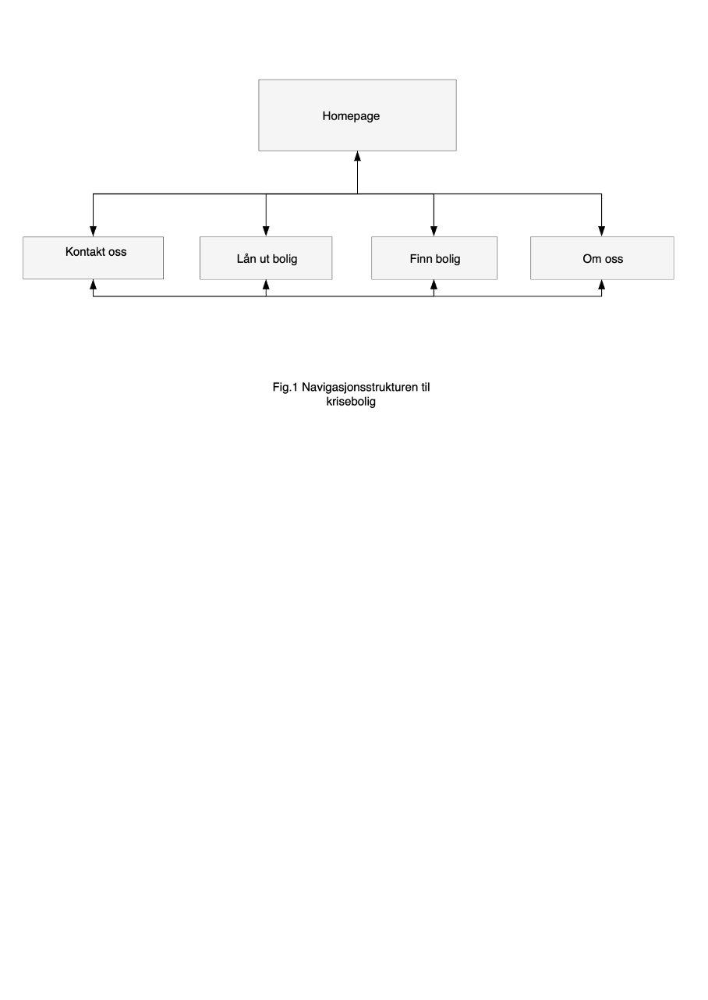
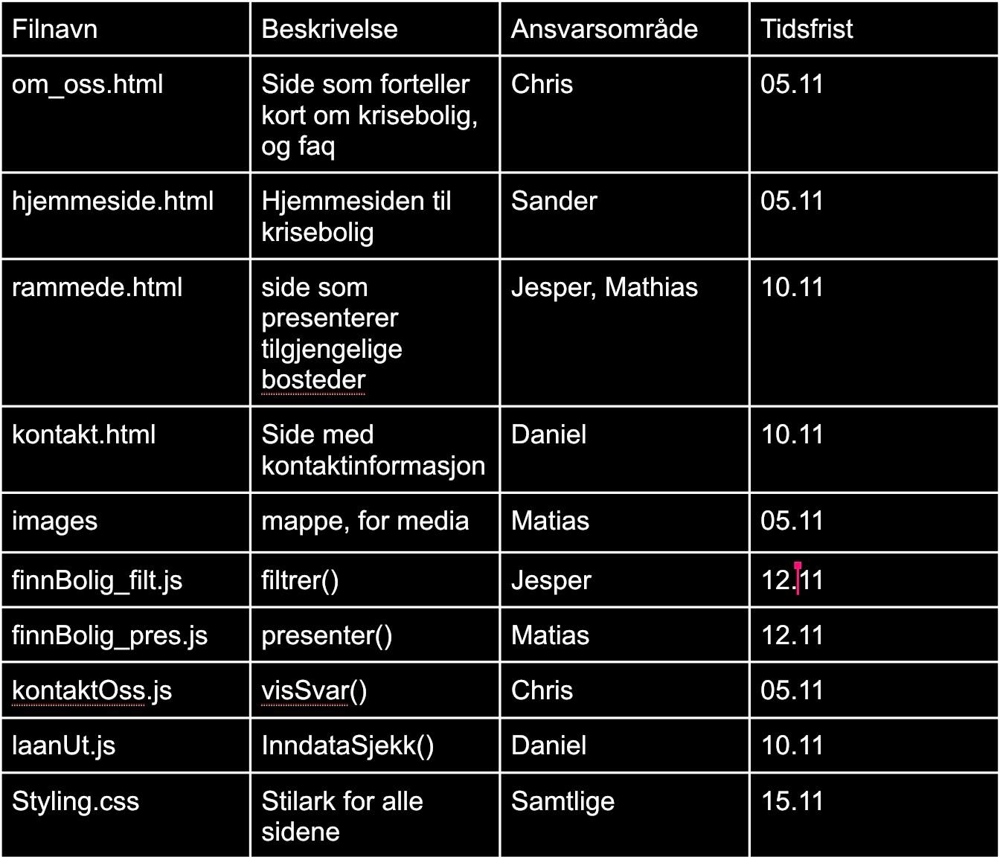

P2 project design
Daniel, Chris, Jesper, Sander og Matias
IT2805 02 oktober 2021
Vår klient er den frivillige organisasjonen Krisebolig, representert ved daglig leder Jacop Hansen. Krisebolig jobber for å videreformidle midlertidige bosteder for personer som etter resultat av naturkatastrofer ikke lengre har eget bosted. Formålet med nettstedet er å gjøre det så beleilig som mulig å finne et midlertidig bosted for ofre for naturkatastrofer. Personer som disponerer tilgjengelige boliger, skal kunne legge ut informasjon om bolig. Nettstedet skal fungere som et bindeledd, mellom de to målgruppene til Krisebolig. Dette er både ofre for naturkatastrofer, og personer ønsker å bidra med bistand i form av utlån av bosted.
Navigation Structure
Vi har kommet frem til at det er mest hensiktsmessig med en clique navigasjonsstruktur til Krisebolig.. Strukturen til nettsidene er vist under i figur 1. Fra hjemmesiden er det mulig å navigere til alle de ulike sidene som befinner seg på nettsiden. Alle sidene har den samme navigasjonsbaren som tillater en fri navigering uansett hvilken side du er på. Alle nettsidene har den samme navigasjonsbaren som gjør at du kan flytte deg fra en vilkårlig side til hvilken som helst annen nettside. Vi ønsker å gi brukerne av nettsiden så mye frihet som mulig når de benytter seg av nettsiden. Det er viktig at brukeren har oversikt over den generelle strukturen på nettsiden og mulighetene brukeren har. Det er det underliggende resonnementet vårt bak en clique struktur. Et eksempel på dette er at dersom man befinner seg på “lån ut bolig”-siden har man tilgang til den samme navigasjonsbaren som på de andre sidene. Dermed blir det enkelt å navigere seg videre dersom det er ønskelig og man unngår å miste funksjonalitet ved at brukeren ikke finner frem til den ønskede siden.
Page laytout and Appearance
Grunnen til at vi har valgt å strukturere siden med få og simple farger er for å skape et gjenkjennelig design. Videre så er fargene lyse, som byr på positivitet i en ellers tung tid. Vi ønsker samtidig ikke at en nettside som denne skal fremstå i overkant positiv. Vi har dermed valgt å ikke bruke i markant lyse farger, men heller lyse nyanser av ellers mørke farger. Dette bygger et håpefullt image og fremstår minimalistisk samt profesjonelt.
Vi har et stort fokus på at det skal være så enkelt som overhodet mulig for brukeren å navigere seg rundt på siden. Individer som leter etter hus etter en naturkatastrofe vil trolig være rystet og ha vanskeligheter for å samle seg. Det er dermed essensielt at nettsidens design ikke byr på et nytt sett med utfordringer for noen som allerede går gjennom en hard tid. Vi starter dermed på hovedsiden med to lenker som tydelig markeres, en for rammede, og en for frivillige. Her får vi skilt mellom de to brukergruppene våre fra start. Dersom noen trykker feil, så vil det ikke være nødvendig å gå tilbake til start-menyen, dette er ettersom at navigasjonsbaren alltid vil være tilgjengelig på alle sider.
Alle nettsidene inneholder en navbar og en footer med felles dimensjoner og farger. Høyden på navigasjonsbaren er 12%, bredden er 100%, bakgrunnsfargen er #2C3137 og skriftfargen er hvit. Navigasjonsbaren er festet øverst på siden og inneholder linkene til alle de andre nettsidene. For å gi brukeren en enkel og trygg opplevelse har vi valgt å ha et fåtall av nettsider hvor alle er tilgjengelige via navigasjonsbaren. Høyden på footeren er 5%, bredden er 100% og bakgrunnsfargen er #D3D3D3. I footeren står navnet på selskapet sammen med de som har designet den (oss). Bakgrunnsfargen på selve innholdselementet er #F2F2F2, og dette går igjen på alle sidene.

Stylingen som vil gå igjen på alle sidene er:
- Skrifttype: Georgia
- Fargetema:
- Tekst: #393E41
- Bakgrunnsfarge: #F2F2F2
- Linker: hvit
- Størrelse: ?????
- Navigasjonsbar: Navigasjonsbaren er alltid festet øverst på siden, og har bakgrunnsfargen #2C3137. Linkene i navigasjonsbaren er hvite, og når man beveger musa over hver av linkene blir bakgrunnsfargen på linkene endret til #D3D3D3.
- Body width: 100%
- Logo: Logoen ligger til venstre øverst i navigasjonsbaren og er et bilde av et en hånd med et hus og en familie over seg. Dette skal symbolisere at vi skaper hjem for familier som trenger det. Denne logoen vil være også fungere som en klikkbar link som tar deg til hovedsiden.
- Footer: I footeren ligger navnet på alle som har vært med å lage siden. I tillegg til dette så har vi valgt å legge til navnet på Krisebolig.
Content
Hjemmesiden - hjemmeside.html Hjemmesiden er det første man møter når man besøker nettsiden vår. Siden er todelt, og designet er unikt for denne siden. Den venstre halvparten er dedikert til de rammede, og hvis man trykker på denne delen av siden blir man sendt til “finn bolig”-siden. Den høyre halvparten er derimot rettet mot de frivillige som ønsker å bidra med en egen eller en del av sin egen bolig, til disposisjon for dem som trenger det. Begge delene skal tydelig vise hvem som fører til hva, og dette forsterker vi ved å bruke både bilde og tekst. Målet med denne siden er altså å sende brukeren videre til riktig side på en effektiv og oversiktlig måte. Vi kunne hatt flere elementer på denne siden, men vi valgte å gjøre det enkelt og oversiktlig for å unngå potensiell forvirring.
Finn bolig - rammede.html Finn bolig siden er dedikert for dem som har mistet boenheten sin og trenger et midlertidig botilbud. Du kan komme til denne siden på to forskjellige måter. Enten ved å klikke på “Finn bolig” knappen på hjemmesiden, eller ved å trykke på “Finn bolig” linken via navigasjonsbaren på hvilken som helst av de andre sidene. På siden har vi lagd et skjema som krever noen opplysninger fra brukeren, og de lyder som følger:
- Antall personer
- Foretrukket by
- Fullt navn på kontaktperson
- Telefonnummer på kontaktperson
Tilby bolig - frivillige.html Denne siden er for de frivillige som er villige til å låne ut rom eller bolig til de rammede som har mistet husene sine. For å komme til denne siden kan man enten klikke seg inn via linken i nav-baren eller ved å klikke på den høyre halvdelen av hjemmesiden. Målene for denne siden er at de frivillige skal enkelt og raskt kunne registrere sine boliger på en effektiv og trygg måte. På denne siden skal brukeren legge inn kontaktinformasjon om seg selv, og informasjon om boligen. Informasjonen som skal fylles inn er navn, telefonnummer, adresse, nærmeste by, antall soveplasser, antall kvadratmeter, og mulighet til å legge inn bilder. Vi trenger kontaktinformasjon om utleier for at selve prosessen med å få de rammede inn i boligen skal gå så effektivt og knirkefritt som mulig. Av sikkerhetsmessige årsaker er det også gunstig å ha nødvendig kontaktinformasjon. Når brukeren har fylt inn nødvendig informasjon skal han/hun sende inn dette ved å trykke på en submit knapp. Alle opplysningene er nødvendige for å kunne sende inn skjemaet. Brukeren skal da få en beskjed hvor det står at skjemaet er sendt inn. Dette gjør at det er enkelt og trygt for brukeren å registrere sin bolig.
Om oss - om_oss.html Denne siden skal inneholde relevant informasjon om den frivillige organisasjonen Krisebolig. For å komme til denne siden må man trykke på “om oss” i nav-baren. Målene for denne siden er at hvem som helst skal kunne finne relevant informasjon om Krisebolig på en minimalistisk nettside som gir følelse av ryddighet og profesjonalitet. Denne siden inneholder bilder av de viktige personene i organisasjonen, samt informasjon om dem. Det å ha kjennskap til hvem som driver en så viktig organisasjon er gir en følelse av trygghet. Videre skal det komme informasjon om historien til Krisebolig, samt hva som inspirerte dem til å gjøre det de gjør. Til slutt skal det komme informasjon om daglig drift, hvordan de opererer osv.
Kontakt oss - kontakt.html Denne siden skal være for brukere som vil komme i kontakt med Krisebolig av ulike årsaker. Målene med denne siden er at brukeren skal få svar på mulige spørsmål, eller få mulighet til å stille spørsmål direkte til Krisebolig. Siden inneholder en “ofte stilte spørsmål” hvor brukerne kan se om spørsmålet de har er allerede blitt svart på. Hvis brukeren ikke finner svar på det de lurte på under “ofte stilte spørsmål” får de mulighet til å spille spørsmål direkte til Krisebolig via et spørsmålsskjema. Under “kontakt oss” er det et spørsmålsskjema hvor brukeren må legge inn navn, e-post, emne, og meldingen de vil sende inn. Dette gjør at det er enkelt for brukeren å kunne stille spørsmål direkte til Krisebolig på en enkel og oversiktlig måte.
Minimum requirements
Matias, Jesper og Daniel har ansvaret for følgende javascript funksjonalitet:
- På siden “finn bolig”, skal brukeren få muligheten til å angi antall personer og foretrukket by. Med disse opplysningene skal en javascript funksjon returnere indeksene til boliger som passer disse egenskapene, og kalle opp funksjonen som presenterer de relevante boligene
- På siden “finn bolig”, skal en javascript funksjon visuelt presentere tilgjengelige boliger, innenfor parametrene angitt gjennom det aktive filteret, og skrive disse ut i form av html elementer som vises som annonser.
- på siden “kontakt oss”, skal vi ha et segment med ‘frequently asked questions’, som skal animeres av en javascript funksjon og gi en visning, der ved å holde musepekeren over spørsmålet, vil en rollover animasjon vise svaret til brukeren.
- På siden ‘lån ut’ skal det simuleres en registrering av bolig tilgjengelig for utlån. Onclick js funksjonen, vil ikke lagre inndata, i en database, men fortsatt gjøre en vurdering om inndataene er gyldige. Om informasjonen brukeren har angitt er gyldig, vil en bekreftelse på publisering vises. Dersom inndataene er ugyldig, vil også brukeren få tilbakemelding om dette.
Plan
Når vi skal jobbe med å lage nettsiden for Krisebolig har vi valgt å bruke SCRUM-metodikken. Årsaken til at vi valgte SCRUM som rammeverk for arbeidet er så vi kontinuerlig kan iterere over prosessen og at alle gruppens medlemmer får eierskap til prosessen og arbeidsoppgavene, samt at det gir alle god innsikt i arbeidsfordelingen. Vi har utnevnt Matias som SCRUM Master, han holder møter annenhver uke og virker som et bindeledd mellom oss og Jacop Hansen i Krisebolig.
I avsnittet under presenterer vi de ulike filene, mappene og ansvarsområdet til hver enkelt prosjektmedarbeider. Vi ønsker å påpeke at etterhvert som vi jobber med kodingen kan det oppstå endringer i strukturen dersom det viser seg at det er mest hensiktsmessig. Vi tilstreber imidlertid å holde oss til den planlagte strukturen og mappe fordelingen vi presenterer her.
Liste over filer og mapper
- hjemmeside.html
- om_oss.html
- kontakt.html
- rammede.html
- frivillige.html
- images/
- boliger/
- Oslo
- h1.jpg
- l1.jpg
- r1.jpg
- Kristiansand
- h2.jpg
- l2.jpg
- r2.jpg
- Bergen
- h3.jpg
- l3.jpg
- r3.jpg
- Trondheim
- h4.jpeg
- l4.jpeg
- r4.jpeg
- Tromsø
- h5.jpeg
- l5.jpeg
- r5.jpeg
- Molde
- h6.jpeg
- l6.jpeg
- r6.jpeg
- Fredrikstad
- h7.jpeg
- l7.jpeg
- r7.jpeg
- scripts/
- finnBolig_pres.js
- finnBolig_filt.js
- kontaktOss.js
- laanUt.js
- styling.css
Følgende filer vil bli utarbeidet under programmeringsfasen:
